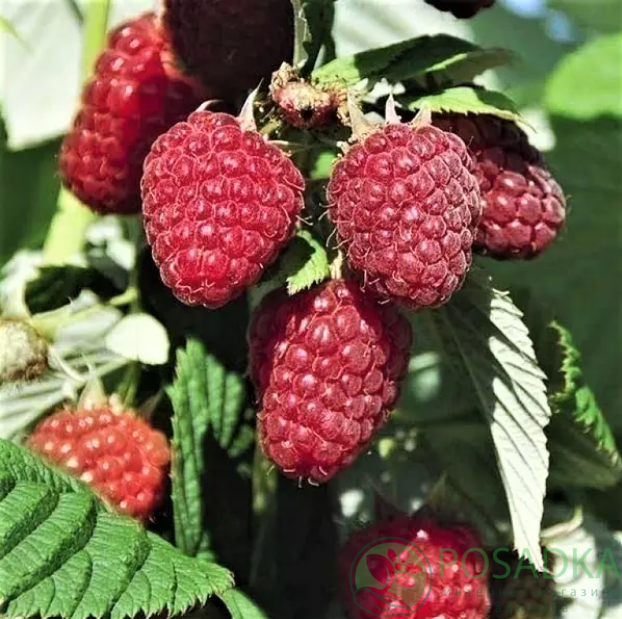

це сучасний ремонтантний сорт малини, створений у США компанією Driscoll's для промислового вирощування. Він поєднує в собі надзвичайно великі ягоди, високу транспортабельність і стійкість до хвороб, завдяки чому отримав популярність серед фермерів, орієнтованих на експорт і продаж у свіжому вигляді.
Тип: ремонтантний
Період дозрівання: середньоранній — кінець липня / початок серпня
Кущ: високий (до 2 м), потужний, прямостоячий, добре утримує великі плоди.
Пагони: з помірною кількістю шипів, добре облистнені.
Ягоди: дуже великі — 8–12 г (деякі до 14 г!), видовжено-конічні, блискучі, яскраво-червоні, одномірні.
Смак: збалансований — солодкий із легкою кислинкою, з легким ароматом.
М'якоть: щільна, м'ясиста, що забезпечує чудову транспортабельність.
Урожайність: висока — до 3–4 кг з куща.
Стійкість до хвороб: висока — до сірої гнилі, антракнозу, кореневих гнилей.
Морозостійкість: помірна (до -20 °C); потребує укриття в регіонах із холодними зимами.